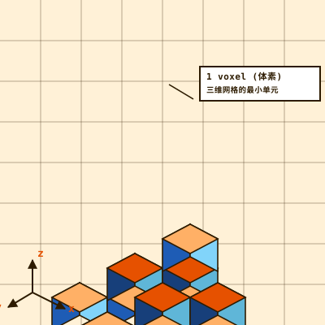

图片的最小元素，用 (x, y) 坐标定位，存储颜色值。

▲ 体素立方体等距投影示意图：每个小立方体代表一个体素，整体构成 3×3×3 + 部分上层的网格结构
VOXEL · VOLUME PIXEL · 3D DATA UNIT
体素 · 三维空间的
最小数据单元
体素（Voxel）是 Volume Pixel（体积像素）的简称——二维世界里像素是图片的最小单位，三维世界里体素就是立体空间的最小分割单元。它在 医学 CT / MRI 中把人体切成一层层可量化的数据，在 地理信息系统 里描述地形与洞穴，在 Minecraft 里让它变成可逐块挖掘与构建的世界。
三维网格的最小单元，用 (x, y, z) 坐标定位，存储颜色、透明度、密度等标量或向量值。
512×512×512
volumetric display
某些真三维显示器分辨率可达约 1.34 亿体素。
Vo + el
etymology
Vo = Volume（体积），el = Element（元素），与 Pixel（Picture Element）同构。
4D
toxel / hypervoxel
时间维度扩展：toxel 是 4D 时空体素；hypervoxel 是高维推广。
Marching
Cubes
Cubes
iso-surface
最经典的体素→多边形等值面提取算法，1987 年提出。
像素 vs 体素 vs 多边形 pixel · voxel · polygon
| 属性 | 像素 Pixel | 体素 Voxel | 多边形 Polygon |
|---|---|---|---|
| 维度 | 2D | 3D | 3D |
| 位置表示 | (x, y) 网格坐标 | (x, y, z) 网格坐标 | 顶点坐标显式存储 |
| 存储内容 | 颜色值 | 颜色 / 透明度 / 密度 / 法向量 | 顶点 + 面拓扑 |
| 优势场景 | 图像 | 非均匀填充的规则采样空间 | 简单 3D 结构（大量空白/均匀填充） |
| 弱点 | 无法表达深度 | 数据量大，带宽要求高 | 难以表达复杂内部结构 |
| 典型应用 | 照片、屏幕 | CT/MRI 影像、地形、Minecraft | 3D 建模、游戏角色 |
直接体渲染
不提取中间面，直接把体素数据沿视线方向积分（如光线追踪、光线投射），生成 2D 投影图像。每个体素值（如 CT 的 Hounsfield 单位）被映射为颜色与透明度，适合医学可视化中观察软组织层次。
等值面提取 · Marching Cubes
设定一个阈值，找出所有体素值等于该阈值的位置，连成多边形面。Marching Cubes 算法将体素网格逐格扫描，根据 8 个顶点的值决定面的形状，生成光滑的三角形网格——本卡顶部的曲面图正是用此方法生成。
增量误差光栅化
1990s 游戏（Outcast、Comanche）的经典技术：从屏幕底部向上逐行做光线追踪，跟踪误差项决定何时步进到下一个体素。完全用 CPU 整数运算，不需 GPU 硬件加速——代价是变换时会产生严重锯齿。
体素的三大应用领域 medicine · science · gaming
CT 扫描中每个体素的值是 Hounsfield 单位（材料对 X 射线的密度）。MRI 采集不同序列的体素数据。超声可同时存储 B 模式灰度与多普勒血流速度，形成多通道体素体积。
体素地形可以表达高度图无法描述的悬垂、洞穴、拱门和凹陷地形。气象模拟中，大气被划分为三维体素网格，每个格点存储温度、气压、风速等多维数据。
Minecraft 用体素存储世界数据，但用多边形渲染每个方块。No Man's Sky 的行星地形由体素引擎生成，支持破坏与创造。Teardown 用体素实现完全可破坏的环境。
切片式（逐层 2D 编辑）、雕塑式（类似 3D 雕刻但无拓扑约束）、积木式（像搭积木一样增减方块）。可替代或补充传统 3D 多边形建模，产出体素艺术（Voxel Art）。
体素数据通常很大（如 512³ 就是 1.34 亿个采样点），但通过高效压缩可以做到消费级硬件上的交互式可视化。体素值可以是单标量（如不透明度），也可以是多标量向量（如 RGB + 不透明度）。
toxel（temporal voxel）是体素在时间维度上的推广：一个 100×100×100×100 的 toxel 数据集可视为 100 帧 100×100×100 的体积图像。用于表达和分析时空系统。
里程碑游戏 outcast · minecraft · comanche · no man's sky
1992
Comanche
NovaLogic · Voxel Space 引擎（纯汇编）· 飞行模拟 · 比同期矢量图形更精细的地形
1999
Outcast
Appeal · 光线投射 heightmap + 多边形纹理 · 常被误称为"体素引擎"先驱
2000
Command & Conquer: Tiberian Sun
Westwood · 用体素渲染大部分载具单位
2011
Minecraft
Mojang · 体素存储世界 × 多边形渲染方块 · 完全可破坏/可建造
2013
Resogun
Housemarque · 纯体素横版射击 · 展示体素在视觉效果上的艺术潜力
2016
No Man's Sky
Hello Games · 过程生成的行星体素地形 · 可破坏与创造
2020
Teardown
Tuxedo Labs · 完全可破坏的体素环境 · 物理模拟
2024
Enshrouded
Keen Games · 体素生存 RPG · 建造与地形变形
∞
更多体素游戏
Dual Universe · Space Engineers · 7 Days to Die · Cube World · Trove · Veloren · Crossy Road · Cloudpunk …
为什么理解体素很重要 · 体素不是一项"新技术"——CT 扫描机从 1970s 年代就在生成体素数据。但它的当代含义远比"3D 像素"丰富：它把连续的三维空间离散化为可计算、可检索、可渲染的规则网格，让计算机能处理人体内部、地下洞穴、大气流动——这些传统多边形模型难以描述的"内部有结构"的空间。Minecraft 把它变成通俗文化，但体素真正的力量在医学影像和科学可视化里。